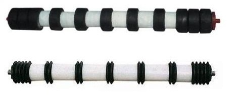

梳型托辊上套有硬橡胶圈，对防止输送带跑偏和清扫有很大的作用!专用于输送粘性物料的输送机使用。
影响梳型托辊好坏的因素： 1.托辊径向跳动量（该项指标直接影响物料 输送的稳定性） 2.轴向串动量（直接影响托辊的使用寿命） 3.灵活度（影响托辊的使用寿命和胶带的使用寿命，以及整机的驱动功率） 4.防水性能（影响托辊使用寿命） 5.防尘性能（影响托辊使用寿命） 6.轴向承载能力（影响托辊使用寿命） 7.抗冲击能力（影响托辊使用寿命） 8.旋转阻力（影响胶带使用寿命）